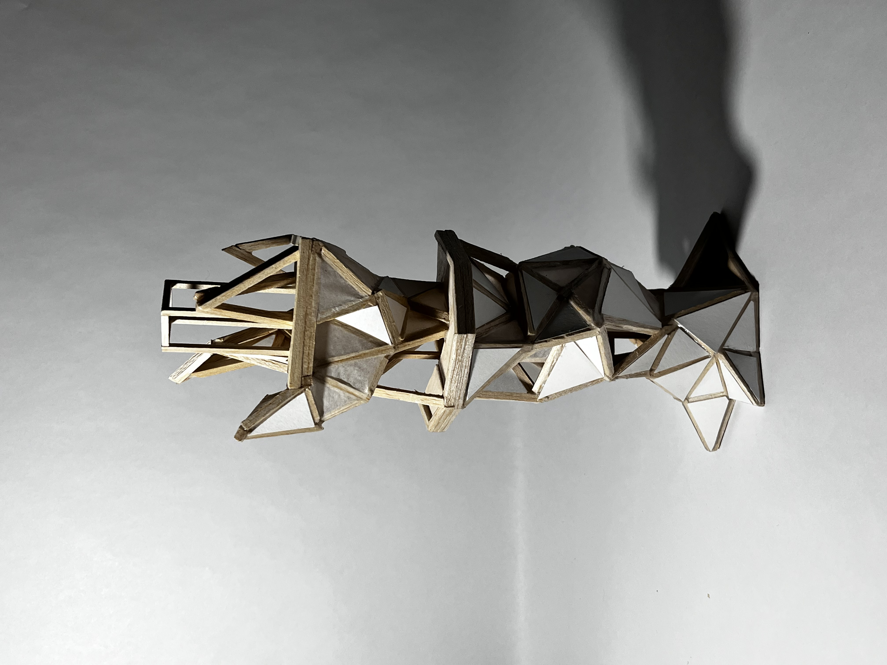
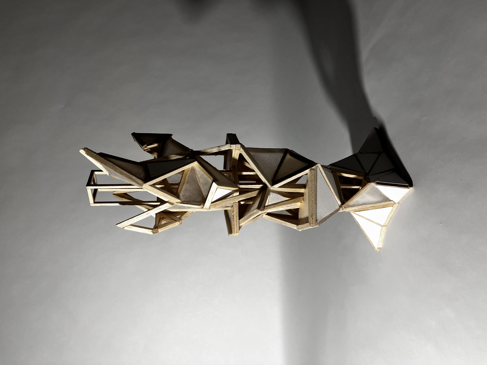
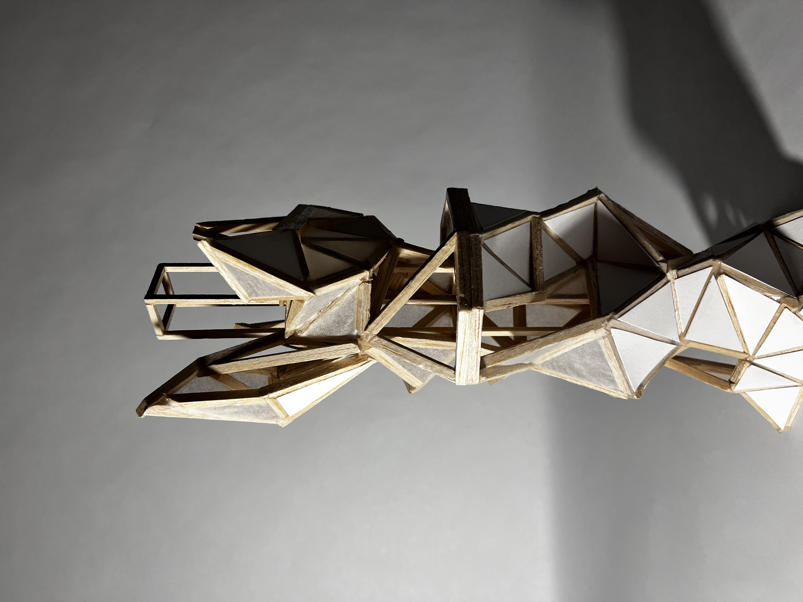
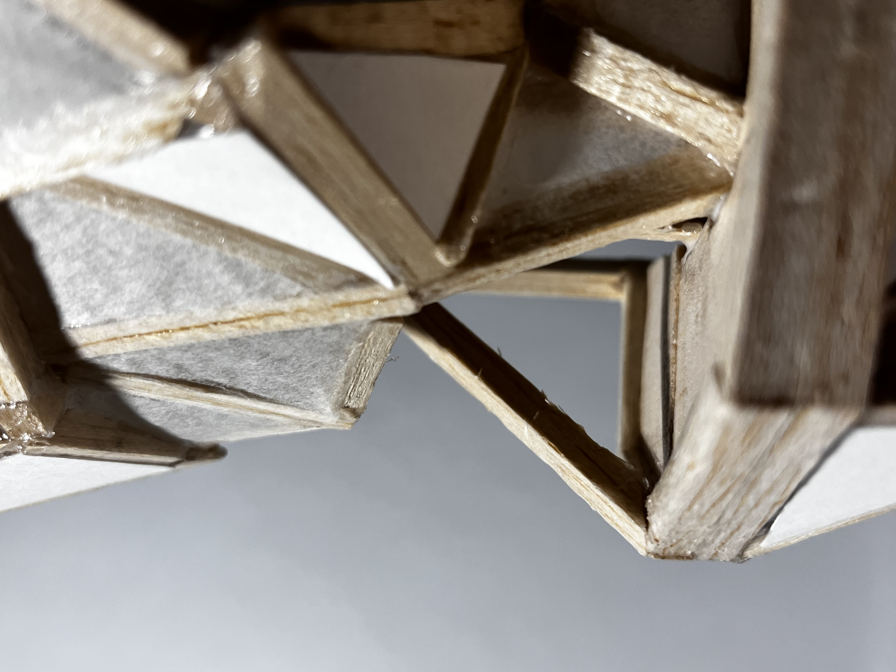
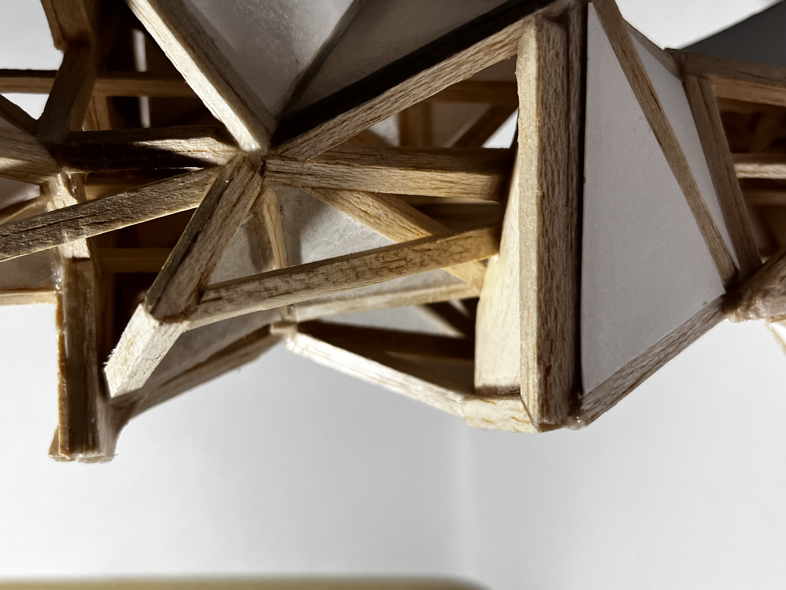
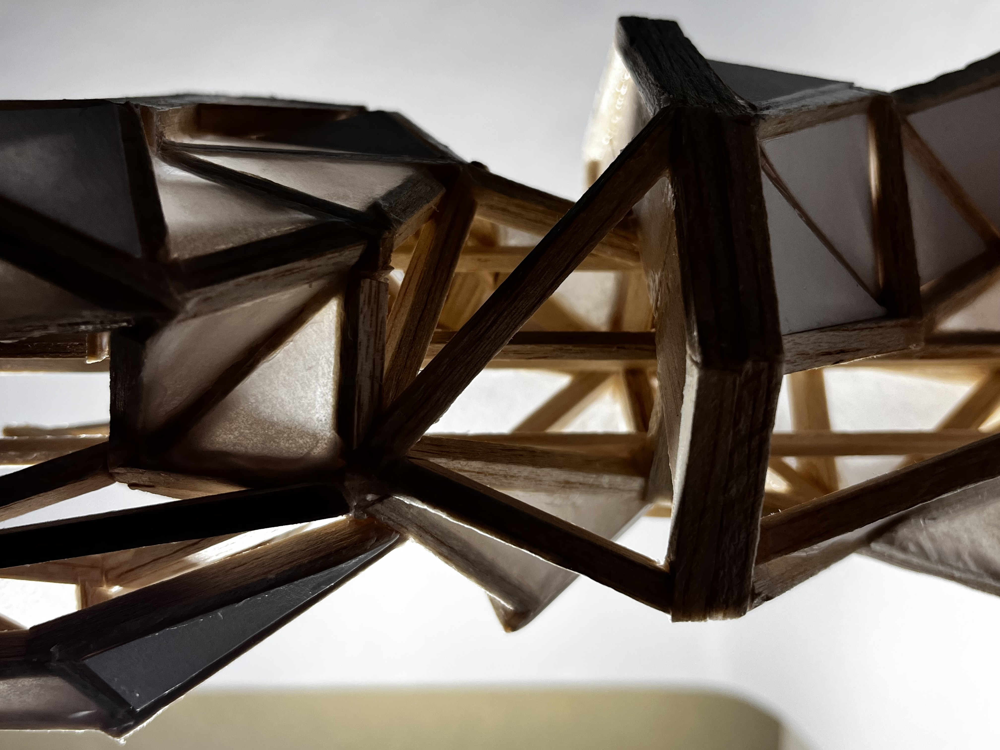
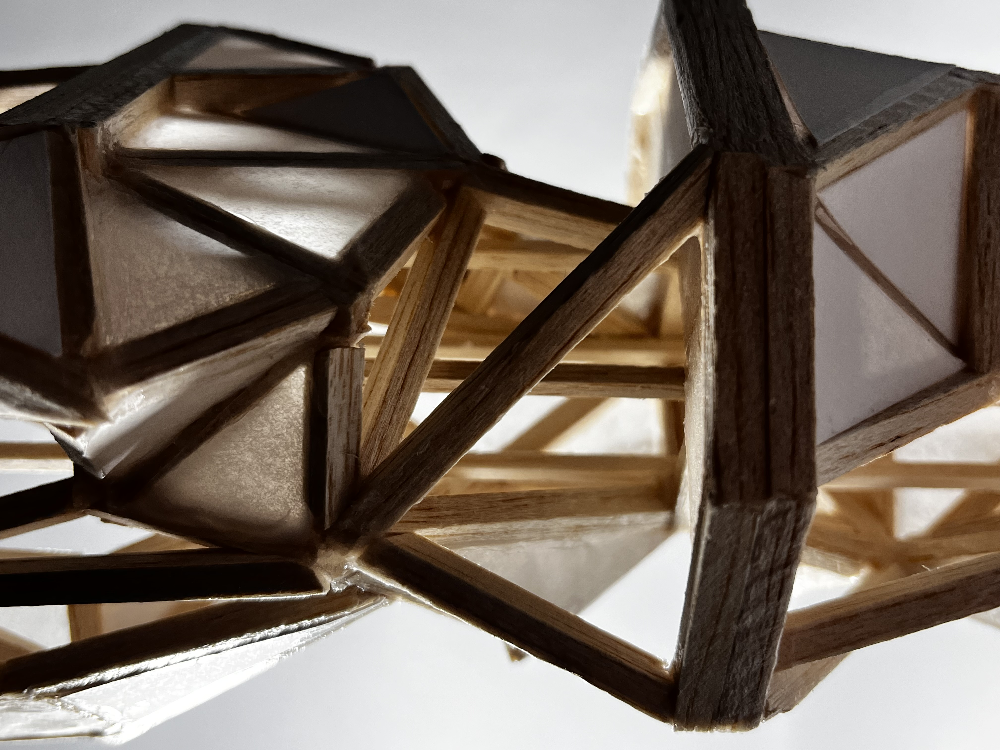
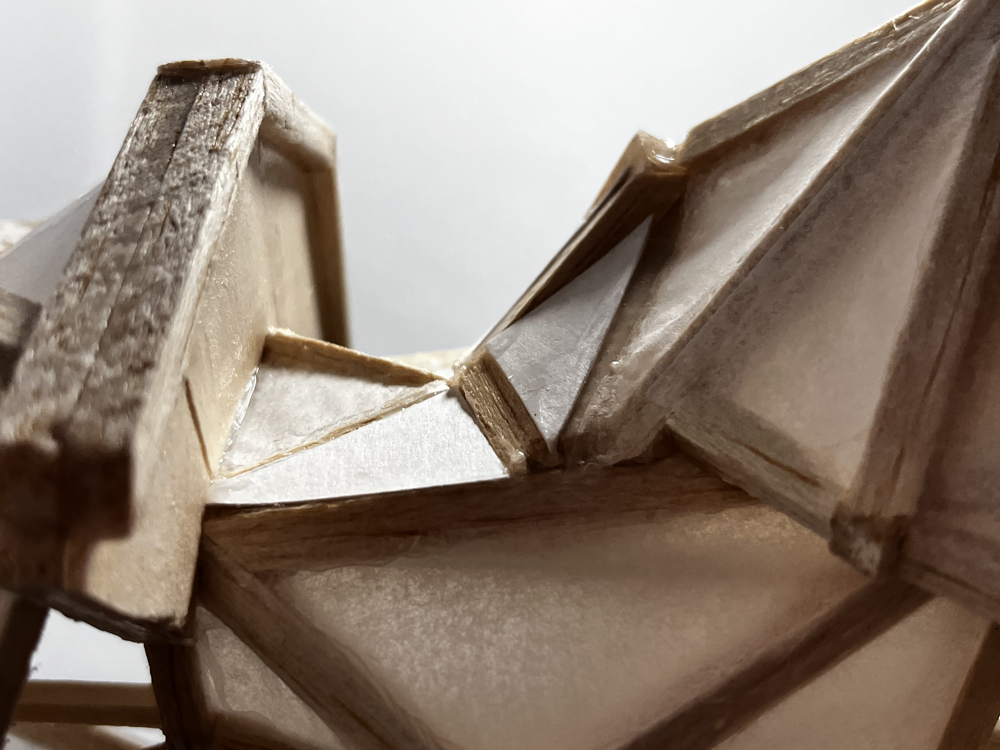
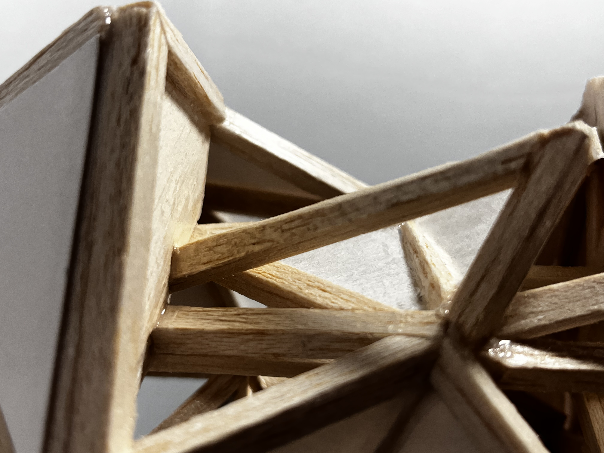
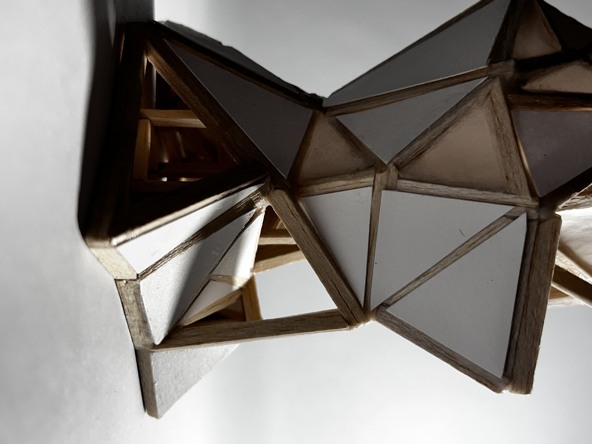

Observation Tower
In the context of the University of Illinois Urbana-Champaign Arboretum, this observation tower imitates the shape of the trees around it. Each of the four decks are meant to provide different perspectives of the landscape as people move up and down the tower. The walls slowly become less opaque until they disappear entirely while going upwards. This allows for light to pass through the tower near the top, mirroring foliage of trees.









